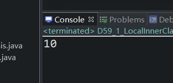
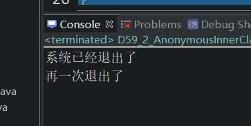

原文出处:本文由博客园博主心悦君兮君不知-睿提供。
原文连接:https://www.cnblogs.com/ruigege0000/p/12014303.html
原文连接:https://www.cnblogs.com/ruigege0000/p/12014303.html
一、局部内部类
1.局部内部类等同于局部变量
2.局部内部类在访问局部变量的时候，局部变量必须使用final修饰。
3.举个例子：
package com.bjpowernode.java_learning;
public class D59_1_LocalInnerClass {
public static void main(String[] args) {
D59_1_LocalInnerClass d1 = new D59_1_LocalInnerClass();
d1.m1();
}
//方法
public void m1() {
final int i = 10;//如果不加final的话，这个变量就会变了，那我们执行内部类中的
//方法的时候，里面用到i的话，值就不能确定了
//局部内部类
//局部内部类不能访问控制权限修饰符修饰
class InnerClass59 {
//内部类不能有静态
// public static void m1() {}
//成员方法
public void m2() {
System.out.println(i);
}
}
InnerClass59 inner = new InnerClass59();
inner.m2();
}
}

二、匿名内部类
1.匿名内部类：指的是类没有名字
2.举例
package com.bjpowernode.java_learning;
public class D59_2_AnonymousInnerClass {
public static void main(String[] args) {
// test(new CustomerService59)//这种调用方法是不对的，因为接口是不能创建对象的
CustomerServiceImp1 c1 = new CustomerServiceImp1();
test(c1);
//接下来使用匿名内部类来进行创建，这是只需要保留接口就行，下面的接口实现的类可有可无了
test(new CustomerService59() {
public void logout(){
System.out.println("再一次退出了");
}
});
}
//静态方法
public static void test(CustomerService59 cs) {
cs.logout();
}
}
interface CustomerService59{
void logout();
}
class CustomerServiceImp1 implements CustomerService59{
public void logout(){
System.out.println("系统已经退出了");
}
}
3.优点：可以少定义一个类，缺点就是不可以重复使用类，而且形式上不够简洁明了，易错。
三、源码：
D59_1_LocalInnerClass.java
D59_2_AnonymousInnerClass.java
地址：
https://github.com/ruigege66/Java/blob/master/D59_1_LocalInnerClass.java
https://github.com/ruigege66/Java/blob/master/D59_2_AnonymousInnerClass.java
2.CSDN：https://blog.csdn.net/weixin_44630050（心悦君兮君不知-睿）
3.博客园：https://www.cnblogs.com/ruigege0000/
4.欢迎关注微信公众号：傅里叶变换，个人公众号，仅用于学习交流，后台回复”礼包“，获取大数据学习资料